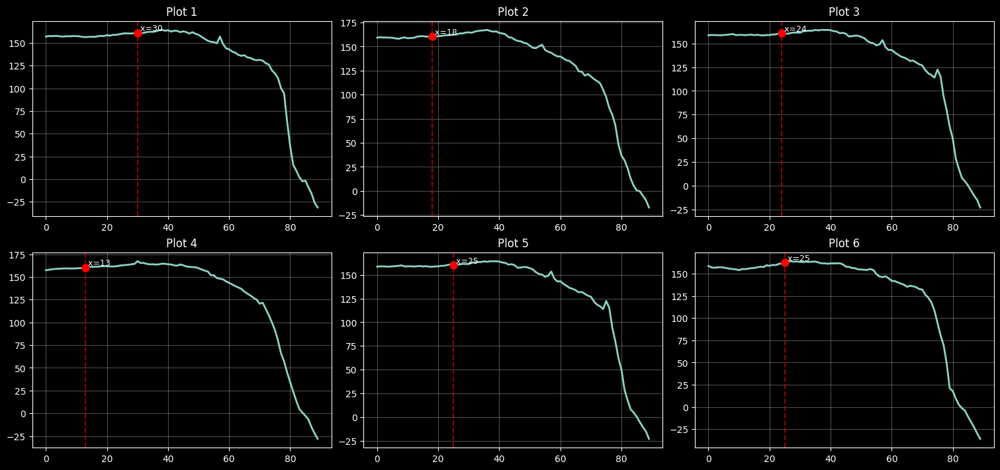

We need a more reliable way to index into the swing – looking for the start, top of backswing and finish
Data Engineering
Automated Annotation
Author
Ali Zaidi
Published
December 8, 2025
We’re going to try isolate three specific landmarks in the swing and use this as the basis to clip the swings and compare them appropriately. 1. Start of backswing 2. Top of backswing 3. Contact Point Since we’re using 2d keypoints as proxies to determine this information, we will have to settle with landing in a general region around this landmark, if we can keep it within 2-3 frames (~5% of the number of frames in a second) this should be good enough for comparison purposes
Code
def get_top_idxs(swing_list): x_lowest = [get_x_lowest(swing_list[x].r_wrist) for x inrange(len(swing_list))] y_lowest = [get_y_lowest(swing_list[x].r_wrist) for x inrange(len(swing_list))] xy_lowest = [get_xy_sum_lowest(swing_list[x].r_wrist) for x inrange(len(swing_list))] complex_backswing_top_frames = [get_top_idx(swing_list[x].r_wrist, y_axis_only=True, thresh_value=0.001) for x inrange(len(swing_list))] all_idxs = [x_lowest, y_lowest, xy_lowest,]# complex_backswing_top_frames] avg_backswing_idxs =list(np.array([np.array(x) for x in all_idxs]).mean(axis=0).round().astype(int))return avg_backswing_idxs
top_backswing_df, top_backswing_SwExt_list, top_backswing_clip_names = get_cleaned_df( before_increment=10, after_increment=20,)top_backswing_frames_list = get_frames_from_df(top_backswing_df)print(set([x.shape for x in top_backswing_frames_list]))view_videos_grid(top_backswing_frames_list[:3])
{(30, 512, 512, 3)}
Code
def get_lowest(np_array): return np.argmin(np_array)def get_highest(np_array): return np.argmax(np_array)def get_x_lowest(np_array): return get_lowest(np_array[:, 0])def get_y_lowest(np_array): return get_lowest(np_array[:, 1])def get_x_highest(np_array): return get_highest(np_array[:, 0])def get_y_highest(np_array): return get_highest(np_array[:, 1])def get_xy_sum_highest(np_array): return get_highest(np_array[:, :2].sum(axis=1))def get_xy_sum_lowest(np_array): return get_lowest(np_array[:, :2].sum(axis=1))x_lowest = [get_x_lowest(top_backswing_SwExt_list[x].r_wrist) for x inrange(len(top_backswing_SwExt_list))]y_lowest = [get_y_lowest(top_backswing_SwExt_list[x].r_wrist) for x inrange(len(top_backswing_SwExt_list))]xy_lowest = [get_xy_sum_lowest(top_backswing_SwExt_list[x].r_wrist) for x inrange(len(top_backswing_SwExt_list))]complex_backswing_top_frames = [get_top_idx(top_backswing_SwExt_list[x].r_wrist, y_axis_only=True, thresh_value=0.001) for x inrange(len(top_backswing_SwExt_list))]all_idxs = [x_lowest, y_lowest, xy_lowest,]# complex_backswing_top_frames]avg_backswing_idxs =list(np.array([np.array(x) for x in all_idxs]).mean(axis=0).round().astype(int))
contact_df, contact_SwExt_list, contact_clip_names = get_cleaned_df( before_increment=-20, after_increment=40,)contact_frames_list = get_frames_from_df(contact_df)print(set([x.shape for x in contact_frames_list]))view_videos_grid(contact_frames_list[:3])
{(20, 512, 512, 3)}
Code
x_highest = [get_x_highest(contact_SwExt_list[x].r_wrist) for x inrange(len(contact_SwExt_list))]y_highest = [get_y_highest(contact_SwExt_list[x].r_wrist) for x inrange(len(contact_SwExt_list))]xy_highest = [get_xy_sum_highest(contact_SwExt_list[x].r_wrist) for x inrange(len(contact_SwExt_list))]#complex_contact_bottom_frames = [get_top_idx(contact_SwExt_list[x].r_wrist, # y_axis_only=True,# thresh_value=0.001) for x in range(len(contact_SwExt_list))]contact_idxs = [x_highest, y_highest, xy_highest,]# complex_contact_bottom_frames]avg_contact_idxs =list(np.array([np.array(x) for x in contact_idxs]).mean(axis=0).round().astype(int))print(avg_contact_idxs)print(y_highest)print(xy_highest)print(x_highest)
start_df, start_SwExt_list, contact_clip_names = get_cleaned_df( before_increment=90, after_increment=0, return_kps=False)start_frames_list = get_frames_from_df(start_df)print(set([x.shape for x in start_frames_list]))view_videos_grid(start_frames_list)
{(90, 512, 512, 3)}
Code
start_idxs = [30, 18, 24, 13, 25, 25]
Code
right_angle_list = [start_SwExt_list[x].right_arm_angle for x inrange(len(start_SwExt_list))]plot_grid_variable_markers(right_angle_list, start_idxs)

Code
def plot_grid_variable_markers(data_list, marker_indices):""" Plots a grid of lines where each plot highlights a specific, unique x-index. Args: data_list (list): List of arrays for y-values. marker_indices (list): List of x-indices, one for each plot. e.g., [12, 15, 10, ...] """ n_plots =len(data_list) cols =3 rows = math.ceil(n_plots / cols)# Create figure with constrained layout fig, axes = plt.subplots(rows, cols, figsize=(15, 3.5* rows), constrained_layout=True)# Flatten axes for single-loop iterationif n_plots >1: axes = axes.flatten()else: axes = [axes]for i, ax inenumerate(axes):if i < n_plots:# 1. Get data y_data = data_list[i] x_data = np.arange(len(y_data))# 2. Get the specific marker for THIS plot# (Check bounds to ensure we have a marker for this plot index)if i <len(marker_indices): marker_idx = marker_indices[i]else: marker_idx =None# 3. Plot Line ax.plot(x_data, y_data, linewidth=2, label=f'Series {i}')# 4. Highlight the variable markerif marker_idx isnotNoneand0<= marker_idx <len(y_data):# Vertical line ax.axvline(x=marker_idx, color='red', linestyle='--', alpha=0.6)# Point marker ax.plot(marker_idx, y_data[marker_idx], 'ro', markersize=8)# Optional: Label the frame number ax.text(marker_idx, y_data[marker_idx], f' x={marker_idx}', verticalalignment='bottom', fontsize=9) ax.set_title(f"Plot {i+1}") ax.grid(True, alpha=0.3)else:# Hide unused subplots ax.axis('off') plt.show()